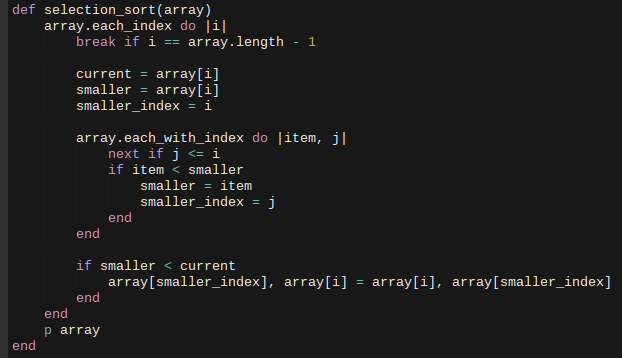

Sorting algorithms: selection sort
February 25, 2016
Today's post is the selection sort, the third in a series I've done on sorting algorithms, with the others being bubble sort and insertion sort. Selection sort has a runtime of O(n^2) for comparisons, and doesn't adapt to its data set; but it has a stable O(n) runtime for swaps, because it makes a minimum number of them, making it a slow sorting algorithm but a good choice for when the cost of swaps is high. Writing this algorithm gave me a great deal of trouble, however (probably due to the fact that it's both late at night and I'm sick).

I had two big issues writing this algorithm. For one, I had a hard time understanding what its sorting method was. Did it compare the current item with one further down the line, or itself to a previous one, or what? Thanks to this very odd but also very helpful video, I was able to understand that selection sort works by iterating over the array, where each consecutive item is the current item at some point. For each item, the search iterates over a slice of the array starting from that item until the end of the array, searching for any item in the array smaller than the current one, and swapping their locations.
My second issue was that when I was iterating over the array slice, I was saving the index of the smaller
item, but that index was relative to the slice, not the overall array. It took me forever to understand
what was happening, even when using
the wonderful puts debugger. I had even managed to get it to work somehow before it all broke again
when I tried feeding my program an array with repeating items.
In the end it all worked out. Can't wait to try my hand at the other algorithms!